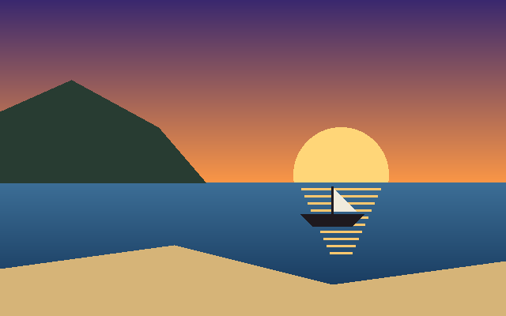
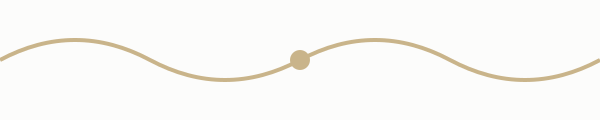
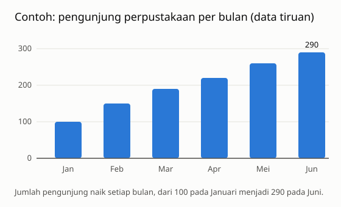
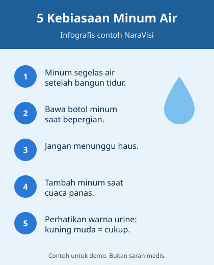
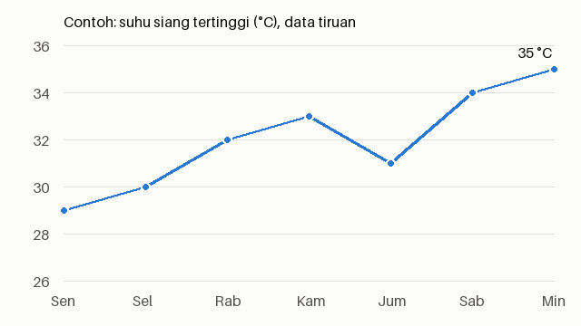

Halaman Uji NaraVisi
Tekan Alt+Shift+K. Panel NaraVisi seharusnya menampilkan 6 gambar
dengan urutan seperti nomor di bawah (atas → bawah, gambar di <main> lebih dulu, gambar di
samping paling akhir).


Grafik

[2] Grafik batang ber-alt generik alt="gambar".
Infografis

[3] Infografis dengan alt yang sudah bermakna (tidak akan ditimpa NaraVisi).
Diagram
[4] SVG inline: halaman web → layanan AI → suara.
Grafik garis

[5] Grafik garis ber-alt nama file alt="IMG_0412.png".